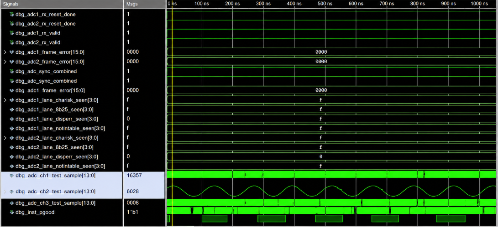
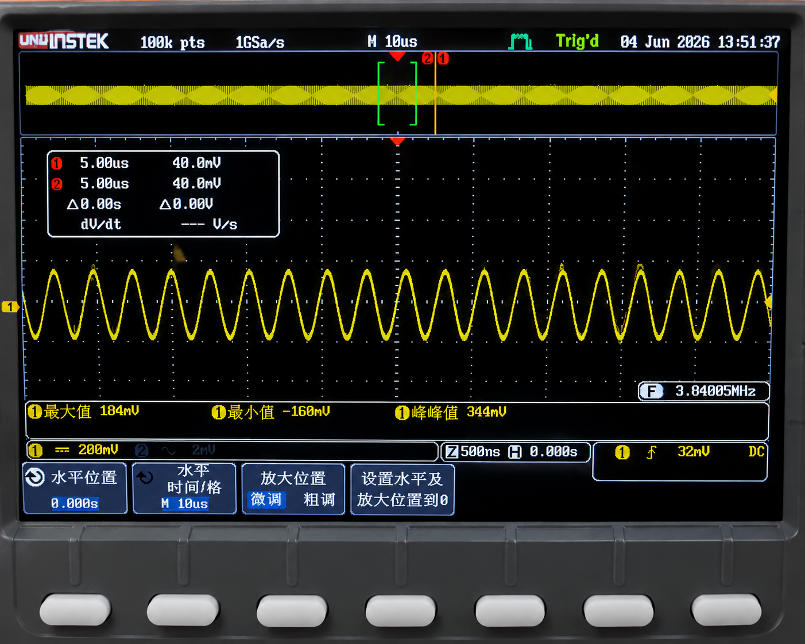
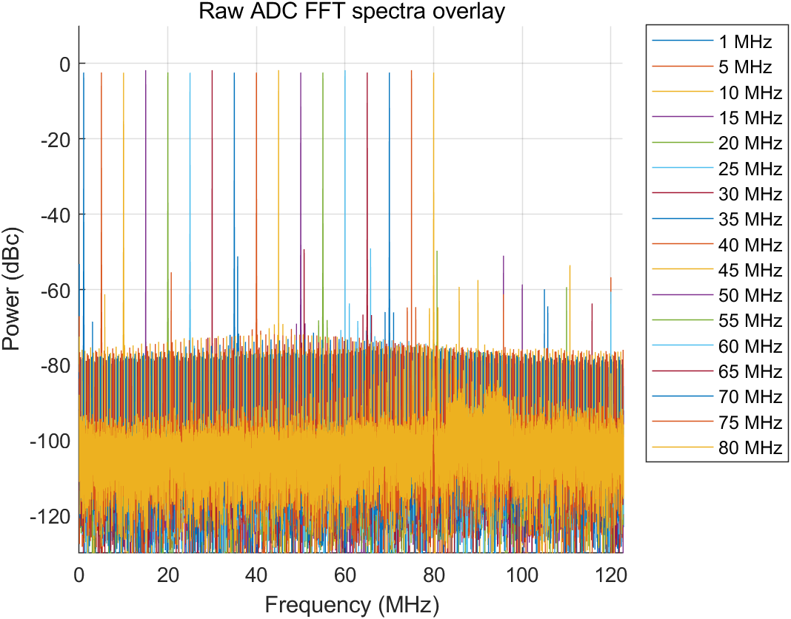
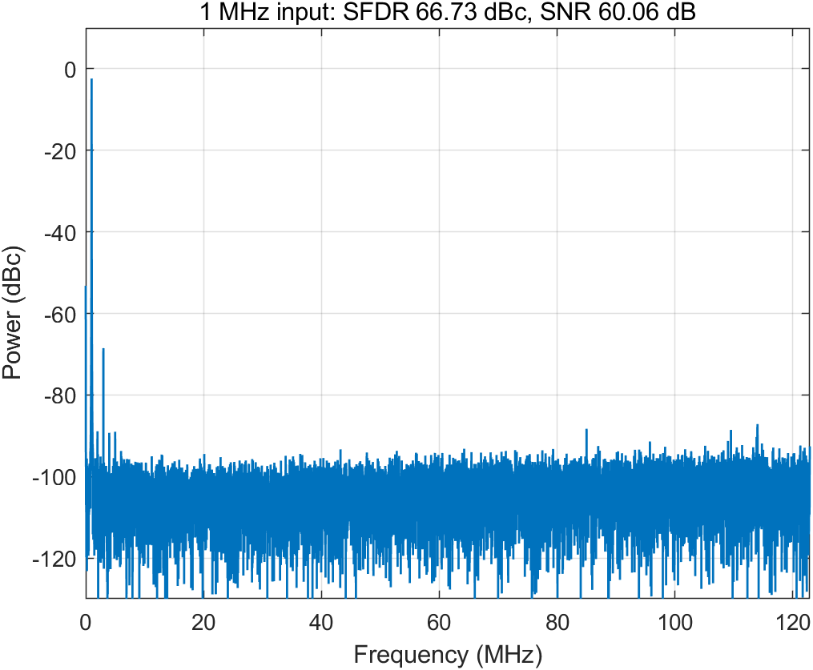
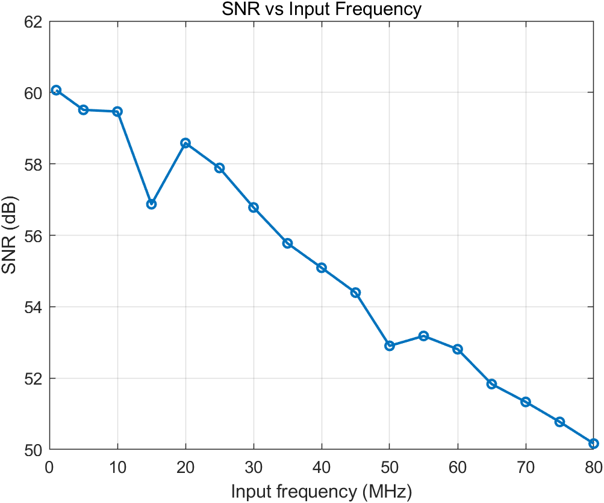
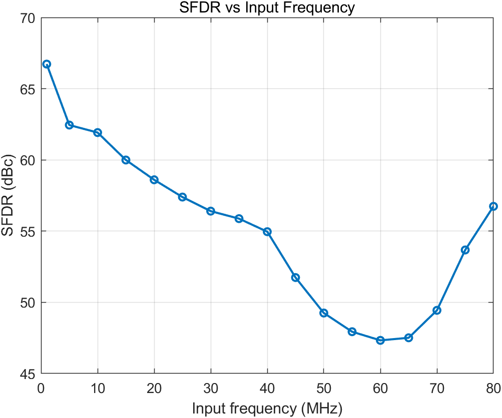
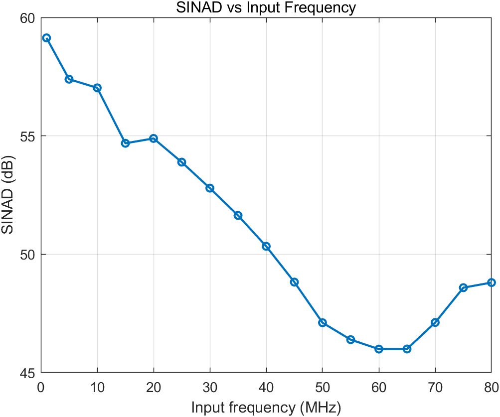
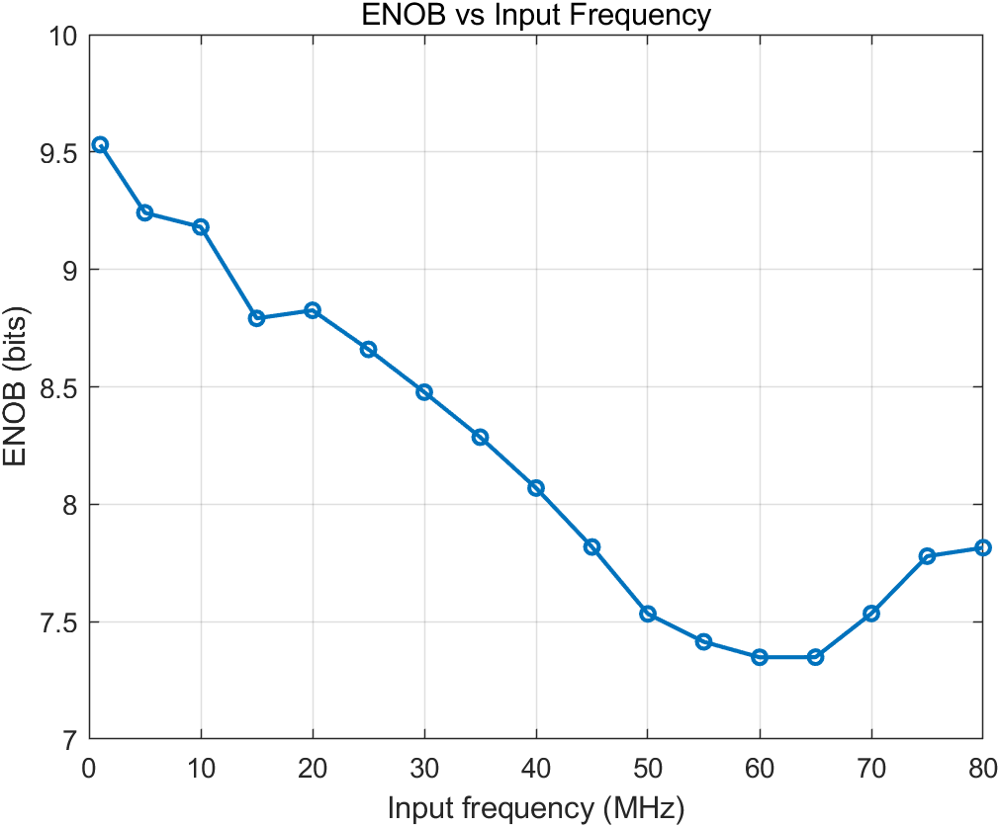
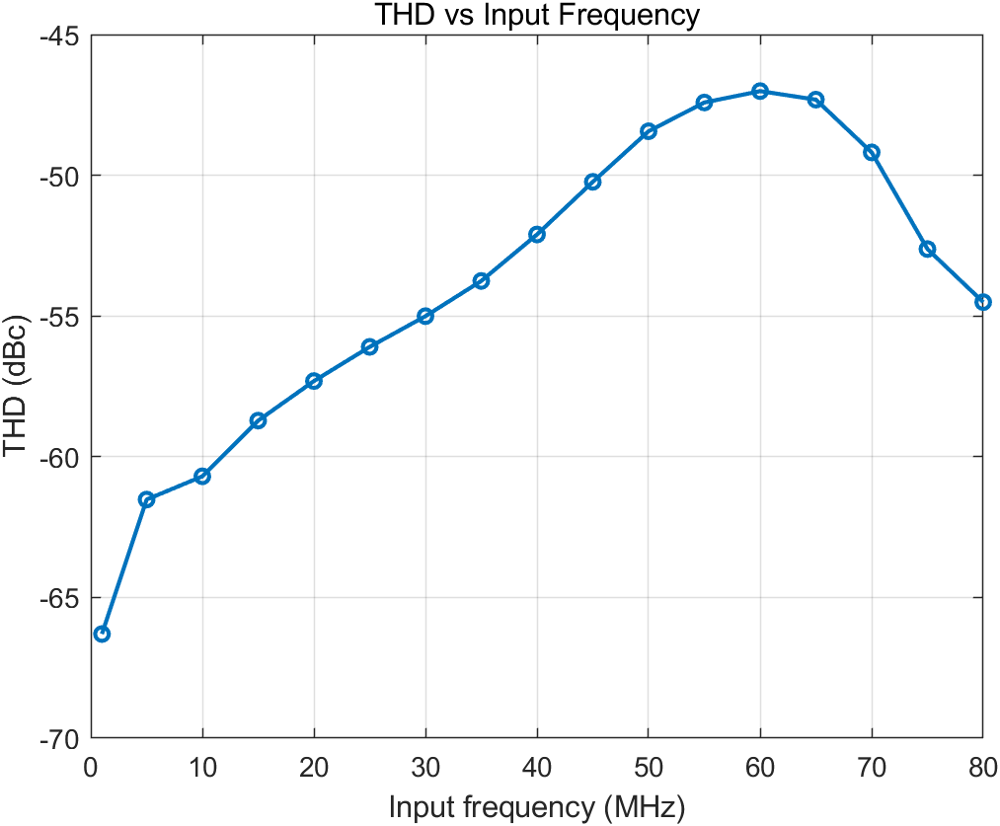

测试结论
系统在 1 MHz - 10 MHz 输入范围内动态性能最好；40 MHz 以上性能开始明显下降；55 MHz - 65 MHz 是当前测试中需要重点关注的频段。
Test Result
测试部分分为两层：首先验证 AD 采集、FPGA 搬运与 DA 输出是否形成闭环；随后对 ADC 原始采样数据做 FFT 后处理，观察不同输入频率下的 SNR、SFDR、SINAD、THD 和 ENOB 变化。
回环验证是整块板卡最关键的功能测试：ADC 采样数据先进入 FPGA，再由 FPGA 送往 DAC 输出。ILA 中能看到 ADC 数据被稳定读取，示波器端能看到 DAC 输出波形，说明采集、传输、处理和回放链路已经打通。


ADC 性能测试使用 FPGA 内部 raw ADC ILA 抓取 JESD 接收数据，再由 MATLAB 脚本解包 64 bit payload 中的 14 bit ADC 样点并进行 FFT 分析。测试重点放在动态指标，不单独评价幅度。
| 频段 | 测试表现 |
|---|---|
| 1 MHz - 10 MHz | SNR 接近 60 dB，ENOB 大于 9 bits，整体动态性能最好。 |
| 15 MHz - 35 MHz | 性能开始下降，但仍较稳定，ENOB 约 8.3 - 8.8 bits。 |
| 40 MHz - 65 MHz | SFDR、SINAD、THD 均下降明显，是本次测试中需要重点关注的频段。 |
| 70 MHz - 80 MHz | SFDR 和 THD 有所回升，但 SNR 仍保持下降趋势。 |
频谱部分同时展示所有输入频点叠加结果和单频点结果。叠加图便于观察整体趋势，滑块图用于逐个查看每个输入频率下的主峰、杂散和噪声底。


从指标曲线看，低频输入下采集链路表现最好；输入频率升高后，SNR、SINAD 和 ENOB 整体下降，55 MHz - 65 MHz 附近的杂散与失真表现最值得关注。





系统在 1 MHz - 10 MHz 输入范围内动态性能最好；40 MHz 以上性能开始明显下降；55 MHz - 65 MHz 是当前测试中需要重点关注的频段。